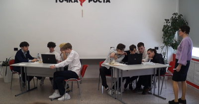
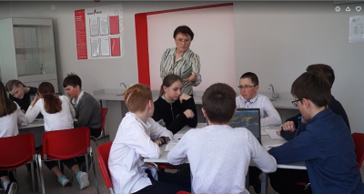
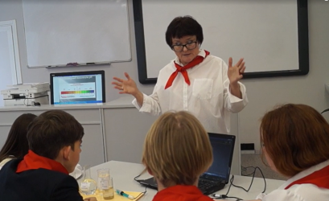
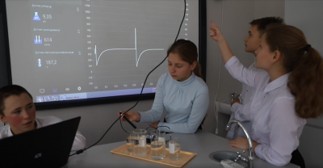

1. Практико-ориентированный урок в 8 классе по теме " Электролитическая диссоциация" с использованием цифровой лаборатории по химии центра образования " Точка роста"

2. Практико-ориентированный урок в 6 классе по теме " Условия прорастания семян" с использованием цифровой лаборатории по химии центра образования " Точка роста"

3. Занятие дополнительного образования в 8 классе по теме " Влияние PH среды на жизнедеятельность бактерий" с использованием цифровой лаборатории по химии центра образования " Точка роста"

4. Занятие внеурочной деятельности в 6 классе в рамках реализации интегрированного проекта " Экологический мониторинг воды" с использованием цифровой лаборатории по химии центра образования " Точка роста"
